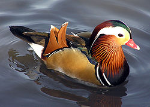
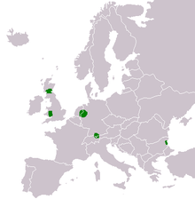
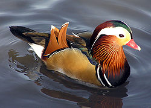
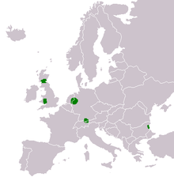

| Mandarin Duck | |
|---|---|
|  | |
| Male at Slimbridge Wildfowl and Wetlands Centre, England | |
| Conservation status | |
| Binomial name | |
| Aix galericulata (Linnaeus, 1758) |
|
|  | |
| European distribution of Aix galericulata |
| Mandarin Duck | |
|---|---|
|  | |
| Male at Slimbridge Wildfowl and Wetlands Centre, England | |
| Conservation status | |
| Binomial name | |
| Aix galericulata (Linnaeus, 1758) |
|
|  | |
| European distribution of Aix galericulata |
The Mandarin Duck (Aix galericulata), or just Mandarin, is a medium-sized perching duck, closely related to the North American Wood Duck. It is 41–49 cm long with a 65–75 cm wingspan.
The adult male is a striking and unmistakable bird. It has a red bill, large white crescent above the eye and reddish face and "whiskers". The breast is purple with two vertical white bars, and the flanks ruddy, with two orange "sails" at the back. The female is similar to female Wood Duck, with a white eye-ring and stripe running back from the eye, but is paler below, has a small white flank stripe, and a pale tip to its bill.[2]
Unlike other species of ducks, most Mandarin drakes reunite with the hens they mated with along with their offsprings after the eggs have hatched and even share scout duties in watching the ducklings closely.[3] However, even with both parents securing the ducklings, most of them do not survive to adulthood.
The species was once widespread in eastern Asia, but large-scale exports and the destruction of its forest habitat have reduced populations in eastern Russia and in China to below 1,000 pairs in each country; Japan, however, is thought to still hold some 5,000 pairs.[4]
Specimens frequently escape from collections, and in the 20th century a feral population numbering about 1,000 pairs was established in Great Britain.; more recently small numbers have bred in Ireland. Although this is of great conservational significance, the birds are not protected in the UK since the species is not native there. There is also a free-flying feral population of several hundred mandarins in Sonoma County, California. This population is the result of several mandarin ducks escaping from captivity, then going on to reproduce in the wild.
In the wild, Mandarin Ducks breed in densely wooded areas near shallow lakes, marshes or ponds. They nest in cavities in trees close to water and during the spring, the females lay their eggs in the tree's cavity after mating. The males take no part in the incubation, simply leaving the female to secure the eggs on her own. However, unlike other species of ducks, the male does not completely abandon the female, leaving only temporarily until the ducklings have hatched. Shortly after the ducklings hatch, their mother flies to the ground and coaxes the ducklings to leap from the nest. After all of the ducklings are out of the tree, they will follow their mother to a nearby body of water where they would usually encounter the father, who will rejoin the family and protect the ducklings with the mother.[5] If the father isn't found then it is likely that he may have deceased during his temporary leave. The Asian populations are migratory, overwintering in lowland eastern China and southern Japan.
Mandarins feed by dabbling or walking on land. They mainly eat plants and seeds, especially beechmast. They feed mainly near dawn or dusk, perching in trees or on the ground during the day.
Mandarins may form small flocks in winter.

{kind=link}
{kind=link}